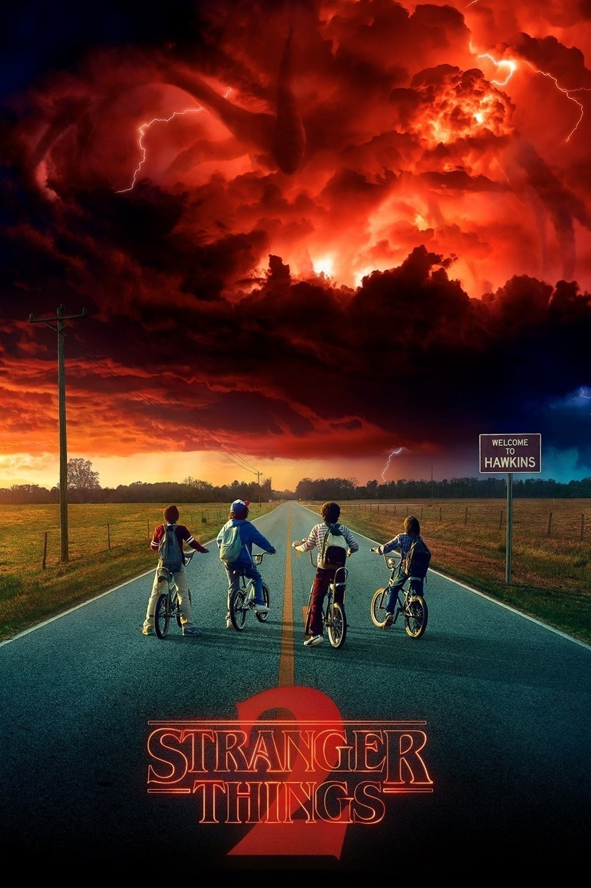
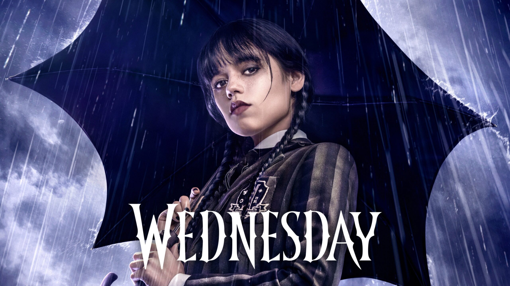

Stranger Things
"Stranger Things is a popular series blending supernatural mysteries with 80s nostalgia, following a group of kids in the small town of Hawkins as they encounter strange occurrences and government experiments."

Wednesday
DWednesday Addams is a fictional character from the Addams Family franchise.

Sweet Home
Sweet Home (Korean: 스위트홈) is a South Korean web series starring Song Kang, Lee Jin-wook, and Lee Si-young.
My Demon
My Demon stars Kim Yoo Jung, Song Kang, Lee Sang Yi, and Kim Hae Sook. A demon Gu Won (Song Kang) has lost his powers. His tattoo has transferred itself on a rich heiress Do Do Hee (Kim Yoo Jung), whose life is under threat from all sides.